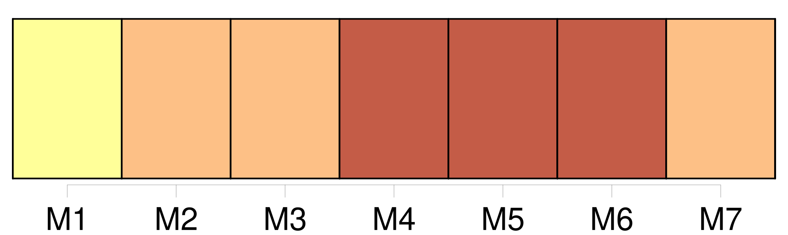
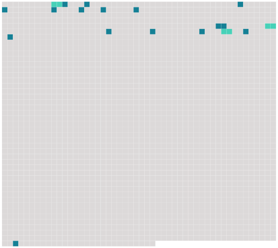

Longueur nb maillons : 19 mentions |
 |
En entrant, il avait serré la main de [l'homme] [qui] l'invitait. [C'] était un fort, un beau garçon de vingt-deux ans au plus, rasé, ne portant que de petites moustaches, l'air gaillard, avec [son] vaste chapeau enduit de craie et [son] colletin de tapisserie, dont les bretelles serraient [son] bourgeron bleu. Claude [l'] appelait Alexandre, [lui] tapait sur les bras, [lui] demandait quand ils iraient à Charentonneau. [10 phrases]
Ce fut [Alexandre] [qui] paya. — Un bon garçon, [cet Alexandre] , dit Claude, quand ils se retrouvèrent tous les deux sur le trottoir de la rue Rambuteau. [Il] est très amusant à la campagne ; [il] fait des tours de force ; puis, [il] est superbe, [le gredin] ; je [l'] ai vu nu, et s' [il] voulait me poser des académies, en plein air …… [66 phrases]
Il serra sa ceinture, souriant, fâché ; puis, se remettant à marcher, faisant allusion au verre de punch d' [Alexandre] , il dit à Florent d'une voix un peu basse : |
 |
Il est possible de télécharger la ressource sur la page Ortolang |
Si vous avez des questions ou vous voyez des erreurs, merci d'envoyer un mail à silvia.federzoni89@gmail.com |